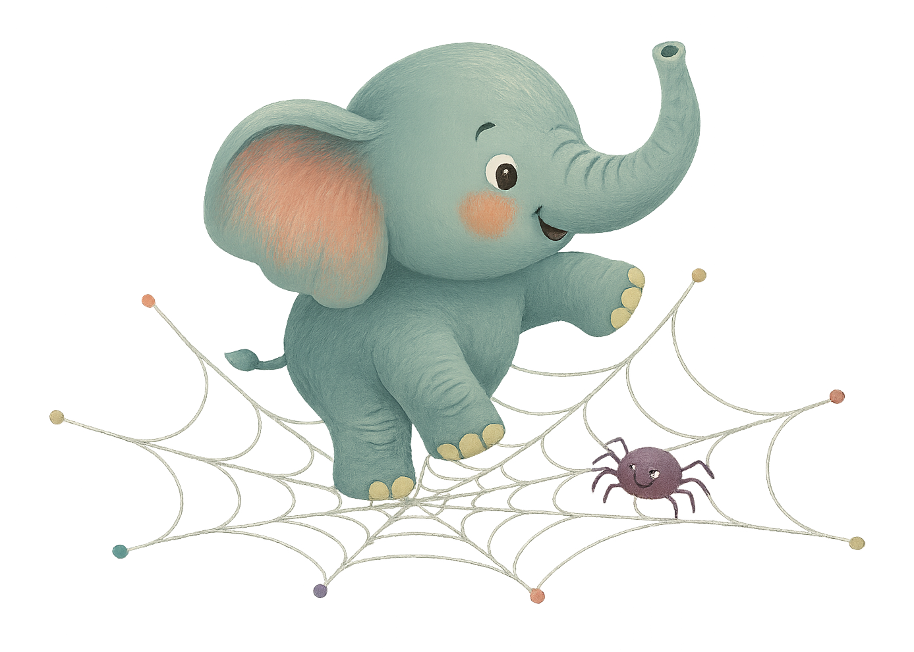
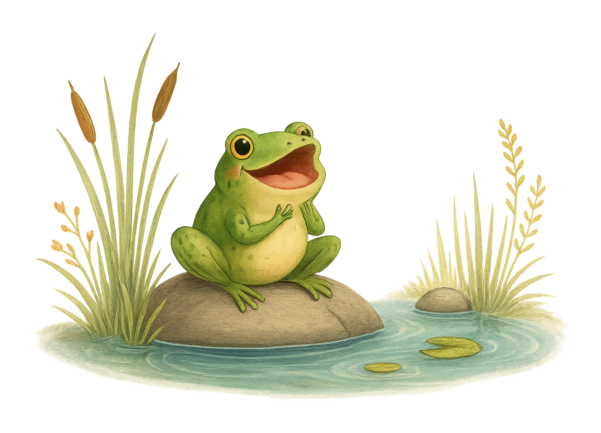
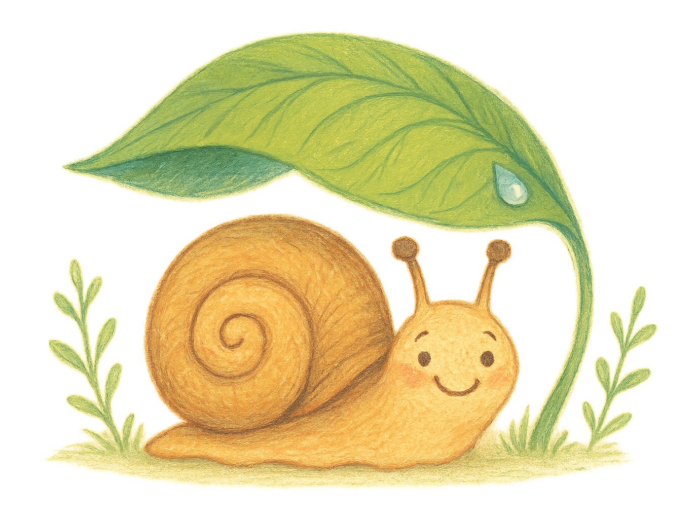
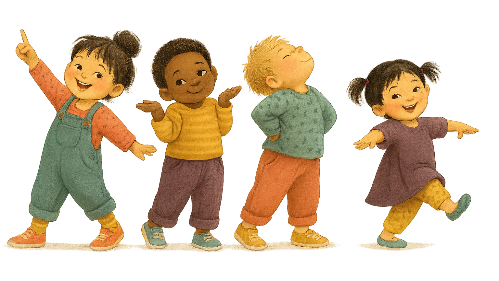
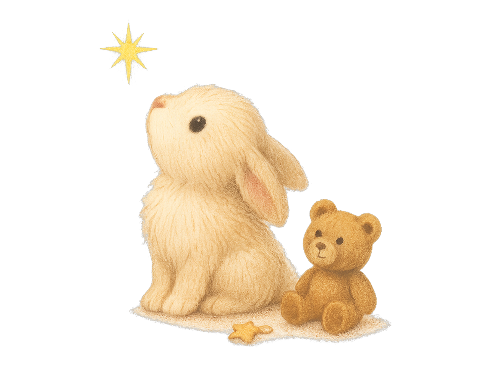

Los pollitos dicen
Los pollitos dicen
pío, pío, pío
cuando tienen hambre,
cuando tienen frío.
La gallina busca
el maíz y el trigo,
les da la comida
y les presta abrigo.
Bajo de sus alas,
acurrucaditos,
hasta el otro día
duermen los pollitos.
Cinco lobitos
Cinco lobitos
tiene la loba,
cinco lobitos
detrás de una escoba.
Cinco tenía,
cinco criaba,
y a todos ellos
teta les daba.
Arroz con leche
Arroz con leche,
me quiero casar
con una señorita
de San Nicolás.
Que sepa coser,
que sepa bordar,
que sepa abrir la puerta
para ir a jugar.
Debajo de un botón
Debajo de un botón, ton, ton,
que encontró Martín, tín, tín,
había un ratón, ton, ton,
¡ay, qué chiquitín, tín, tín!
Ay, qué chiquitín, tín, tín,
era aquel ratón, ton, ton,
que encontró Martín, tín, tín,
debajo de un botón, ton, ton.
Pin Pon
Pin Pon es un muñeco
muy guapo y de cartón,
se lava su carita
con agua y con jabón.
Se desenreda el pelo
con peine de marfil,
y aunque se da tirones
no llora ni hace así.
Sana, sana & Que llueva
Sana, sana,
colita de rana,
si no sana hoy
sanará mañana.
Que llueva, que llueva,
la Virgen de la Cueva,
los pajaritos cantan,
las nubes se levantan.
¡Que sí, que no,
que caiga un chaparrón!
Un elefante

Un elefante se balanceaba
sobre la tela de una araña.
Como veía que resistía,
fue a llamar a otro elefante.
Cucú cantaba la rana

Cucú, cucú,
cantaba la rana.
Cucú, cucú,
debajo del agua.
Cucú, cucú,
pasó un caballero.
Cucú, cucú,
con capa y sombrero.
Caracol, col, col

Caracol, col, col,
saca los cuernos al sol,
que tu padre y tu madre
también los sacó.
Chuchuwa

Chuchuwa, chuchuwa
Chuchuwa-wa-wa
¡Compañía! Repite el coro y suma un movimiento cada vez.
Brazo extendido
Puño cerrado
Dedo hacia arriba
Hombro fruncido
Cabeza hacia atrás
Cola hacia atrás
Pie de pingüino
Lengua afuera
Ta-ta-ta, ta-ta-ta
Ta-ta-ta-ta-ta
Estrellita, ¿dónde estás?

Estrellita, ¿dónde estás?
Me pregunto qué serás.
En el cielo y en el mar,
un diamante de verdad.
Estrellita, ¿dónde estás?
Me pregunto qué serás.
El patio de mi casa
El patio de mi casa
es particular,
cuando llueve se moja
como los demás.
Agáchate,
y vuélvete a agachar,
que los agachaditos
no saben bailar.
H, I, J, K, L, M, N, A,
que si tú no me quieres,
otro amiguito me querrá.
Chocolate, molinillo,
¡corre, corre que te pillo!
Barco chiquitito
Había una vez un barco chiquitito,
había una vez un barco chiquitito,
que no podía, que no podía,
que no podía navegar.
Pasaron un, dos, tres,
pasaron un, dos, tres,
pasaron un, dos, tres,
cuatro, cinco, seis semanas,
y el barquito, y el barquito,
y el barquito no podía navegar.
Y si esta historia no les parece larga,
y si esta historia no les parece larga,
volveremos, volveremos,
volveremos a empezar.
A la víbora de la mar
A la víbora, víbora de la mar, de la mar,
por aquí pueden pasar.
Los de adelante corren mucho,
los de atrás se quedarán.
Una mexicana que fruta vendía,
ciruela, chabacano, melón o sandía.
Verbena, verbena,
jardín de matatena,
verbena, verbena,
campanita de oro,
dejen pasar a toda la familia,
menos al de atrás,
tras, tras, tras.
Naranja dulce
Naranja dulce,
limón partido,
dame un abrazo
que yo te pido.
Si fueran falsos
mis juramentos,
en otros tiempos
se olvidarán.
Toca la marcha,
mi pecho llora,
adiós, señora,
yo ya me voy.
Antón Pirulero
Antón, Antón,
Antón Pirulero,
cada cual, cada cual,
atiende su juego,
y el que no lo atienda,
pagará, pagará
una prenda.